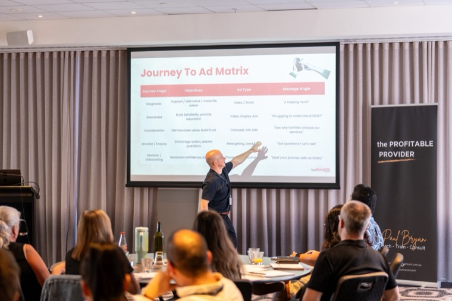
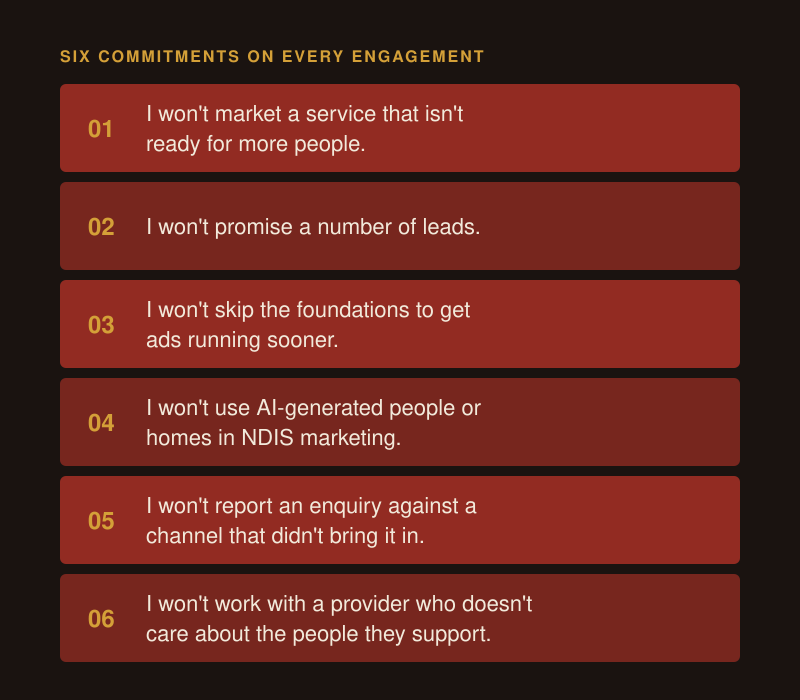
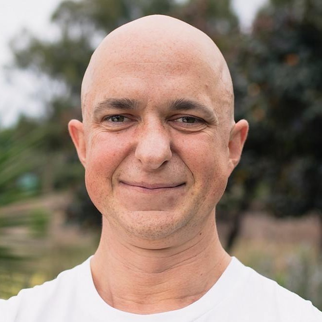

About Chris Lapa: NDIS and Aged Care Growth Leader
Chris Lapa (me) is the founder of CL Growth Academy, a boutique NDIS marketing agency. I act as an outsourced CMO (Chief Marketing Officer) and Growth Coach for NDIS and aged care providers, across marketing, referrals and sales. I have about fifteen years in sales and marketing, the last three and a half in the NDIS sector. I'm NSW-based and work with disability and aged care providers Australia-wide.

What does Chris Lapa do?
I run and collaborate on growth for NDIS and aged care providers as a fractional Chief Growth Officer. That covers the marketing channels, the referral partnerships, the sales and enquiry process, the AI workflows and the simple systems that hold them together.
I work with your care coordination and intake team as well as driving your marketing, because an enquiry your team doesn't follow up is a lost participant whatever the cost. Some engagements run three months. Some run three years. I've worked with NDIS and aged care providers from Perth to Brisbane.
You can see how the channels fit together on the NDIS marketing page.
How did Chris Lapa get into NDIS and aged care marketing?
I started in sales. My first job was cold calling time-poor people who needed a good reason not to hang up on you, which teaches you fast how to listen, and make the conversation less about you and more about their world.
I finished a business and marketing degree around 2012, then went to the US to study social media advertising just as Facebook ads were starting. This was the start of me supporting businesses with their advertising and growth.
Along the way I lost interest in marketing brands that weren't truly purpose-led. Then a founder, Tommy Trout, posted on LinkedIn in 2023 looking for someone to drive the marketing for his disability support business, and I've been in the sector exclusively since then.
Why does Chris Lapa only work with NDIS and aged care providers?
One sector means your challenges and goals are my obsession. I already know who refers, who chooses, what the NDIS rules allow in an ad, and what a family is looking for when they search late at night.
It also means I see the same pattern again and again. Great carers often struggle with running a care business, the same way great chefs often struggle running a restaurant. The care is the hard part, and you've already got it nailed. My job is the awareness and new customer side: getting found, getting referred, and turning enquiries into people you support.
As I tell my newsletter readers, "If you connect with your audience more, convert more, then you help more people."
What won't Chris Lapa do?
I have six commitments I keep on every engagement:
- I won't market a service that isn't ready for more people.
- I won't promise a number of leads.
- I won't skip the foundations to get ads running sooner: proper tracking, a website that turns visitors into enquiries, and a team ready to handle them.
- I won't use AI-generated people or homes in NDIS marketing. Every photo or video starts from a real one.
- I won't report an enquiry against a channel that didn't bring it in.
- I won't work with a provider who doesn't care about the people they support. Especially one that wouldn't live in the SIL home they want me to promote.

How can you work with Chris Lapa?
There are three ways to work with me, and they're different jobs:
| Offer | What it is | Who it suits |
|---|---|---|
| Managed Growth | Fractional CGO: an annual plan, budget and reporting, with every channel run as one plan | Providers who want growth led for them without hiring a full-time marketing team |
| Ads management | A retainer for Google Ads and social media ads, built and managed by my team | Providers with a clear plan who need the campaigns run well |
| Coaching and workshops | A half or full day for you or your team, or regular coaching where you lead and I hold you to the plan | Providers who want to run their own marketing and sales with a clear plan |
There are no lock-in contracts on any of them. Just a 30-day notice period.
Who does the work?
I keep a small team by choice. I set the strategy and stay your point of contact from start to finish, and my specialists in Google Ads, paid social and design do the build work. I don't hand you to an account manager you haven't met.
Where can you hear from Chris Lapa?
I'm posting on LinkedIn (opens in a new tab) every day for 365 days, in public, and I write a weekly newsletter for NDIS and aged care owners, BDMs and marketing teams. I've been a guest on sector podcasts, and I run masterclasses and workshops with providers.
I write like I talk: clarity first, then marketing.
I'm also openly learning AI, and I share what works and what doesn't as I go. Fifteen years in sales and marketing gives me the judgement. AI is the newer part, and I'd rather learn it in public than pretend I've finished.
FAQ

Is Chris Lapa a fractional CMO or a fractional CGO?
Both terms describe the work. I use Chief Growth Officer because the role covers marketing, referrals, sales, parts of AI and simple operations, and a CMO title usually stops at marketing. If you're searching for a fractional or outsourced CMO or someone to lead all your growth for an NDIS or aged care business, that's the role I fill.
Where is Chris Lapa based?
I'm NSW-based and work with NDIS and aged care providers Australia-wide. Most of the work runs online, with workshops and strategy days in person where they're worth the travel. I've worked with providers from Perth to Brisbane.
How long does an engagement with Chris Lapa last?
Some run three months and some run three years. A first engagement usually starts with about four weeks of foundations: positioning, who uses your service and who chooses it, tracking, and a 90-day plan. There are no lock-in contracts, so the work has to earn its place each month.
Will I work with Chris directly?
Yes. I set the strategy and stay your point of contact from start to finish. My small team of specialists builds and runs the campaigns and design, and I review the work and report to you myself.
Get a free growth audit
Book a free growth audit and I'll show you where your growth is coming from now, and the first three things I'd change.